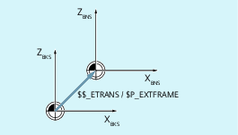

The external zero offset is a linear offset between the base coordinate system (BCS) and the basic origin system (BOS).
The external zero offset with $AA_ETRANS acts in two ways depending on the machine data parameterization:
After activation by the NC/PLC interface signal, the system variable $AA_ETRANS acts directly as offset value
After activation by the NC/PLC interface signal, the value of the system variable $AA_ETRANS is transferred to the active system frames $P:EXTFRAME and the data storage frame $P_EXTFR. The active total frame $P_ACTFRAME is then recalculated.
In conjunction with the system variable $AA_ETRANS, a differentiation is made between two procedures selected with the following machine data:
MD28082 $MC_MM_SYSTEM_FRAME_MASK,Bit1 = <value>
<value> | Meaning |
|---|---|
0 | Function: $AA_ETRANS[<axis>] written directly by PLC, HMI or NC program. Enable to traverse the work offset of $AA_ETRANS[<axis>] in the next possible traversing block: |
1 | Function: Activation of the active system frame $P:EXTFRAME and the data storage frame $P_EXTFR Enable to traverse the work offset of $AA_ETRANS[<axis>] through:
|
Syntax
$AA_ETRANS[<axis>] = <value>
Meaning
| System variable for buffering the external zero offset |
| Channel axis |
| Offset value |
<Axis>.basic.out.acceptExternalWorkOffset = 0 → 1 ⇒ $P_EXTFRAME[<Axis>] = $P_EXTFR[<Axis>] = $AA_ETRANS[<Axis>]
Basic Program Plus | Basic Program | |
|---|---|---|
<Axis>.basic.out.acceptExternalWorkOffset | LBP_Axis*.A_ExtZO | DB31, … DBX3.0 |